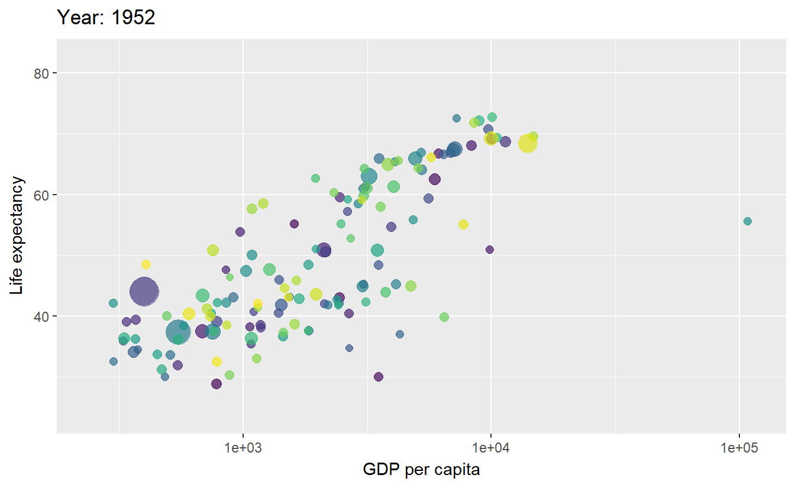

library(tidyverse)
library(DT)
iris2 = iris[c(1:10, 51:60, 101:110), ]
datatable(iris2, filter = 'top', options = list(
pageLength = 5, autoWidth = TRUE
))R Lecture 9
인터랙티브 시각화
인터랙티브 시각화
Advanced Communication
Tables: interactive and stylish
DataTable (https://datatables.net/)
- R wrapper package: DT package (https://rstudio.github.io/DT/)
Tables: DT examples
Tables: DT examples
datatable(iris) %>%
formatStyle('Sepal.Length', fontWeight = styleInterval(5, c('normal', 'bold'))) %>%
formatStyle(
'Sepal.Width',
color = styleInterval(c(3.4, 3.8), c('white', 'blue', 'red')),
backgroundColor = styleInterval(3.4, c('gray', 'yellow'))
) %>%
formatStyle(
'Petal.Length',
background = styleColorBar(iris$Petal.Length, 'steelblue'),
backgroundSize = '100% 90%',
backgroundRepeat = 'no-repeat',
backgroundPosition = 'center'
) %>%
formatStyle(
'Species',
transform = 'rotateX(45deg) rotateY(20deg) rotateZ(30deg)',
backgroundColor = styleEqual(
unique(iris$Species), c('lightblue', 'lightgreen', 'lightpink')
)
)Graphs: static and extended


Graphs: gganimate example
library(tidyverse)
library(gganimate)
library(gapminder)
p <- ggplot(
gapminder,
aes(x = gdpPercap, y=lifeExp, size = pop, colour = country)
) +
geom_point(show.legend = FALSE, alpha = 0.7) +
scale_color_viridis_d() +
scale_size(range = c(2, 12)) +
scale_x_log10() +
labs(x = "GDP per capita", y = "Life expectancy")
p + transition_time(year) +
labs(title = "Year: {frame_time}")
Graphs: interactive, animated, 3D
JavaScript library
D3 (https://d3js.org/)
Highcharts (https://www.highcharts.com/)
ECharts (https://echarts.apache.org/)
dygraphs (https://dygraphs.com/)
Wrapper packages
Graphs: plotly example
Plotly (https://plotly.com/graphing-libraries/)
- R wrapper package:
plotlypackage (https://plotly.com/r/) ggplotly()function
- R wrapper package:

Graphs: plotly example
library(plotly)
fig <- plot_ly(data = iris, x = ~Sepal.Length, y = ~Petal.Length, color = ~Species)
fig